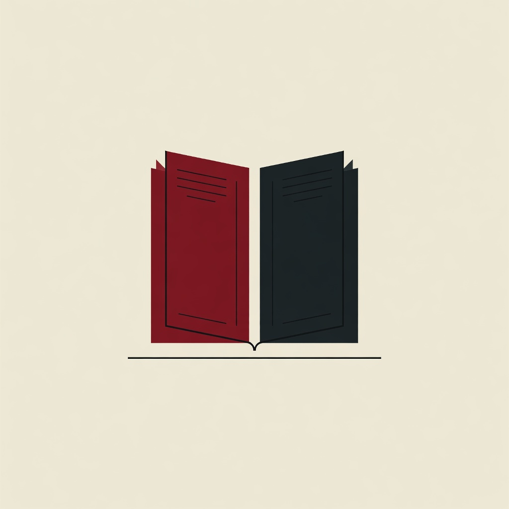
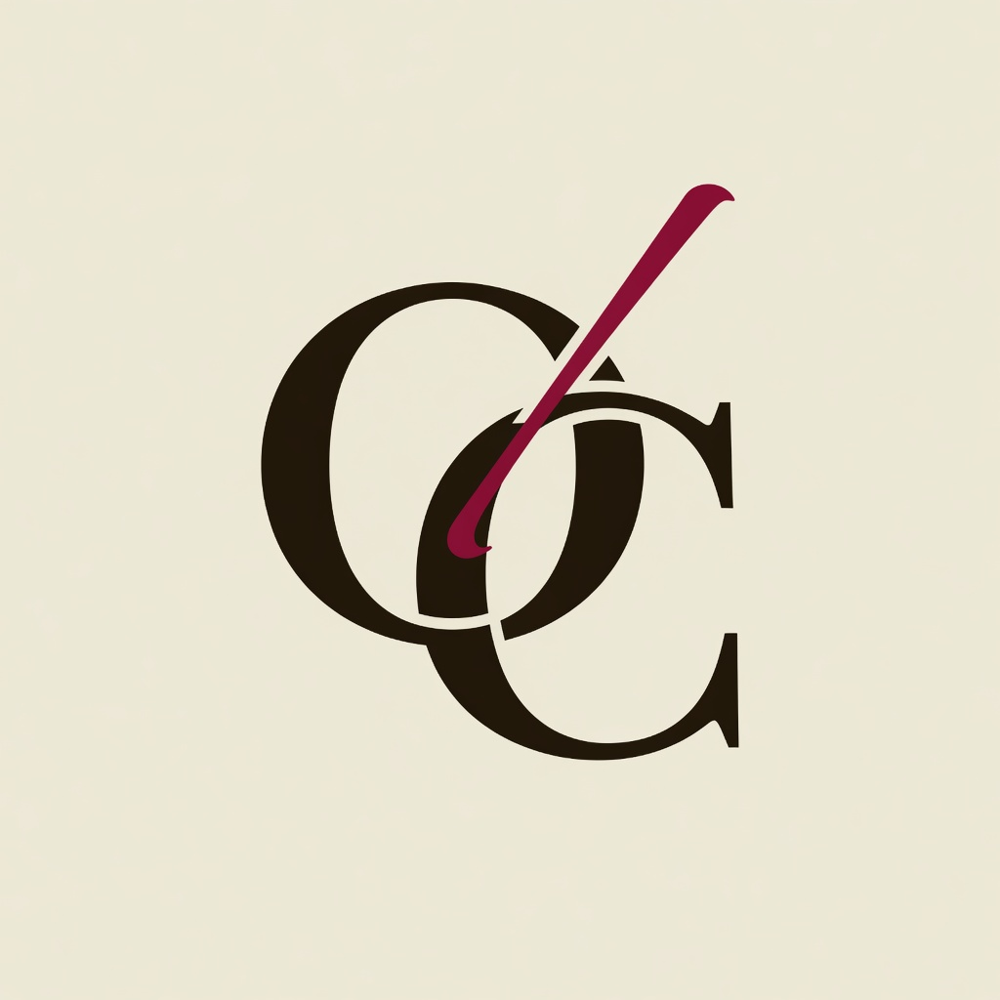

Open Chronicles
A · Rubric + ink (current)
Cormorant Garamond. “Open” in burgundy, “Chronicles” in ink. Warm parchment ground. Matches Direction A and the dual-edition idea (two tones, one name).
Pick a direction for the public face. The live site currently uses Wordmark A + Palette 1 (Parchment & Rubric). Logo marks below are optional experiments—not final art.
Keep Wordmark A (Cormorant + split color) and Palette 1 for the site and first PDFs. Choose a logo later if you want an icon for social cards; a text wordmark is enough for launch.
How the name “Open Chronicles” can look in the header.
Cormorant Garamond. “Open” in burgundy, “Chronicles” in ink. Warm parchment ground. Matches Direction A and the dual-edition idea (two tones, one name).
Source Serif, single ink color, small uppercase domain. Feels like a university press. Cleaner, less “medieval.”
Libre Baskerville small caps, letter-spaced. Strong manuscript cue. Can feel precious if overused in body UI.
EB Garamond with a single rubric rule. Classic book title. Excellent for PDF title pages; slightly quiet for a web logo.
Same type system, different color temperature.
Current default
Warm, readable, lightly medieval. Best fit for this project.
Cool scholarly
Maximum neutrality. Less brand memory; fine for body-only PDFs.
Richer parchment
More atmosphere. Use sparingly so long reading stays comfortable.
Exploratory marks (generated concepts). Prefer a simple wordmark for launch; pick one of these only if you want a social-avatar / favicon direction.

Open book / columns
Manuscript page + horizon. Scholarly, no crusader props.
O + book
Roundel monogram. Works small; slightly more “seal.”

OC monogram
Interlocked letters. Publisher emblem; easiest to turn into a favicon later.
Tell me which wordmark (A–D), palette (1–3), and optional mark you prefer—or “keep current”—and we can freeze that as the default.